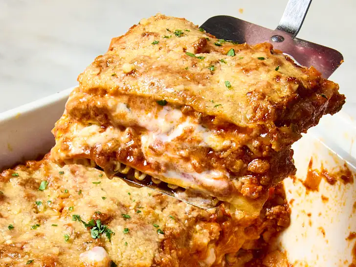

Description
Oh, baby, let me tell you, this lasagna right here? This ain’t just food; this is love layered between noodles.
It’s rich, it’s saucy, it’s got that perfect balance of cheese, meat, and seasoning that’ll have you closing your eyes after the first bite.
The flavors don’t just sit on your tongue—they hug it. The sauce? Simmered to perfection. The cheese? Ooey, gooey, and melts right into every bite.
And the noodles? Tender, but never mushy.
This ain’t just dinner—it’s an experience.
The kind that makes you wanna call your grandma and tell her she’s got competition.